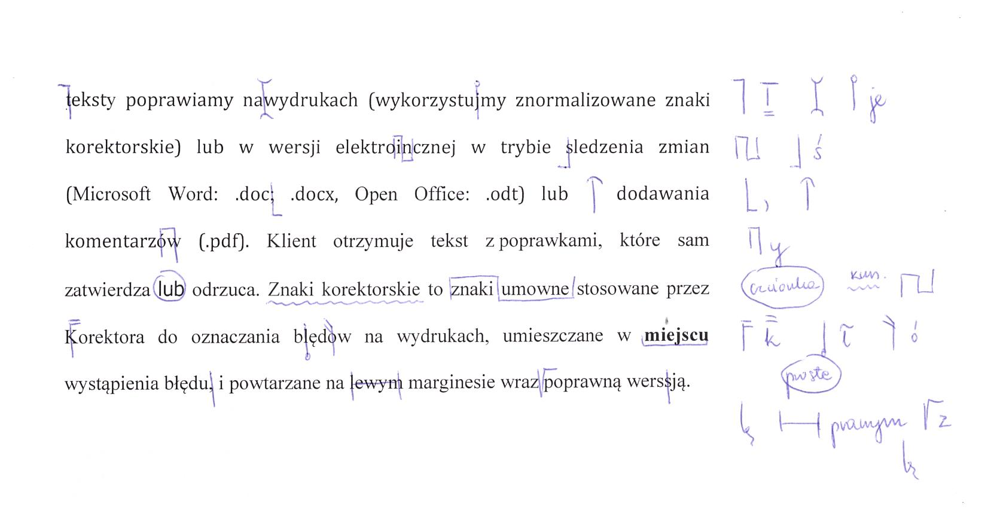

Pracownia edytorska Rubrica świadczy usługi przede wszystkim z zakresu korekty i redakcji tekstu.
Proponujemy Państwu również redakcję techniczną (formatowanie tekstu w pliku Worda: nadanie stylów akapitowych i znakowych, ujednolicenie wcięć, wyliczeń, wypunktowań, podpisów pod grafikami itd.). Sprawdzamy:
Zapraszamy do skorzystania z oferty wydawnictwa, instytucje, firmy, a także osoby prywatne, którym zależy na profesjonalnym wizerunku oraz nawiązywaniu relacji z klientami i czytelnikami za pośrednictwem tekstów poprawnych i atrakcyjnych.
Właścicielka firmy jest absolwentką edytorstwa na Uniwersytecie Jagiellońskim, w pracy z różnego typu tekstami wykorzystuje także wiedzę zdobytą na kursie redaktora prowadzącego (Polskie Towarzystwo Wydawców Książek) oraz kilkuletnie doświadczenie w poprawianiu tekstów informatycznych, prawniczych, popularnonaukowych, finansowych, a także beletrystyki i literatury reportażowej.
Do klientów byłych i obecnych należą:
Intuicja językowa to nie wszystko – aby zagwarantować najwyższą jakość usług, sięgamy po najnowsze wydawnictwa poprawnościowe, publikacje z zakresu edytorstwa i typografii, a także opinie językoznawców.
Teksty poprawiamy na wydrukach (wykorzystujemy znormalizowane znaki korektorskie nanoszone na marginesie) lub w wersji elektronicznej w trybie śledzenia zmian (Microsoft Word: .doc, .docx, Open Office: .odt) lub dodawania komentarzy (.pdf). Klient otrzymuje tekst z poprawkami, które sam zatwierdza lub odrzuca.
* Jeśli tekst jest duży, Klient zostanie poproszony o wpłacenie 50% ustalonej kwoty, zanim rozpoczniemy pracę.
Podane ceny są orientacyjne. Dokładny koszt jest ustalany w zależności od charakteru publikacji, skomplikowania tekstu i jego objętości, a także terminu realizacji zlecenia (po otrzymaniu fragmentu tekstu do oceny). Prosimy o zapoznanie się ze słownikiem terminów przed złożeniem zlecenia – jeżeli zależy Państwu na kompleksowym opracowaniu tekstu (poprawność, zagadnienia leksykalno-stylistyczne, sprawdzenie typografii, ujednolicenie terminologii itd.) , a nie tylko usunięciu błędów językowych, zalecamy skorzystanie z usługi redakcji.
Na życzenie Klienta wykonamy darmową próbkę redakcji/korekty (do 5 stron znormalizowanych, tj. 9000 znaków, przy tekstach liczących ponad 2 arkusze wydawnicze).
| Strona znormalizowana (1800 znaków ze spacjami ~ A4) |
|
| Redakcja | od 5,5 zł |
| Korekta na wydruku | od 4 zł |
| Korekta elektroniczna (.doc, .docx, .odt) |
od 4 zł |
| Korekta w pliku PDF | od 5 zł |
| Redakcja techniczna | do uzgodnienia |
| Audyt stron internetowych | od 10 zł za podstronę |
| Usługa ekspresowa | +50% |
Cennik nie stanowi oferty handlowej w rozumieniu art. 66 § 1 Kodeksu cywilnego. Firma korzysta ze zwolnienia z VAT, dlatego wystawiamy tylko rachunki.
Redakcja
Opracowanie tekstu pod względem leksykalno-stylistycznym i typograficznym (układ tekstu, wyróżnienia) oraz sprawdzenie spójności materiału i weryfikacja jego logiczności, obejmuje między innymi sprawdzenie nazwisk czy pojęć, ujednolicenie skrótów, symboli, nazewnictwa oraz opisów bibliograficznych, dopuszcza ingerencję w znaczenie. Nie jest równoznaczna z korektą merytoryczną, którą powinien wykonać specjalista w danej dziedzinie.
Korekta językowa
Sprawdzenie poprawności językowej tekstu, czyli jego zgodności z zasadami polskiej gramatyki, ortografii i interpunkcji, wyeliminowanie literówek.
Znaki korektorskie
Umowne znaki stosowane przez korektora do oznaczania błędów na wydrukach, umieszczane w miejscu wystąpienia błędu i powtarzane na prawym marginesie wraz z poprawną wersją.
Korekta techniczna
Zadbanie o wygląd estetyczny publikacji (formatowanie, dobór kroju, układ elementów tekstu – ostylowanie dokumentu Worda), aby była ona bardziej czytelna.
Ostylowanie
Nadanie poszczególnym fragmentom dokumentu odpowiednich stylów w celu wygenerowania spisu treści lub po prostu uporządkowania tekstu czy wprowadzenia hierarchii elementów (nagłówki, wypunktowania itd.).
Arkusz wydawniczy
Jednostka obliczeniowa stosowana do określenia objętości tekstu. Przyjmuje się, że 1 arkusz wydawniczy to 40 000 znaków ze spacjami lub 22 strony normatywne (znormalizowane), 700 wersów poezji bądź też 3000 cm2 ilustracji (wzorów, diagramów, zapisu nutowego).
Strona normatywna
Kolejna jednostka miary objętości tekstu wynosząca 1800 znaków ze spacjami. Liczbę znaków sprawdzamy w edytorze tekstu (np. Word), korzystając ze Statystyki wyrazów (karta Recenzja / Statystyka wyrazów).
Zapraszamy do kontaktu za pośrednictwem poczty elektronicznej lub telefonicznie.
E-mail: biuro@rubrica.pl
Telefon: +48 601 081 427